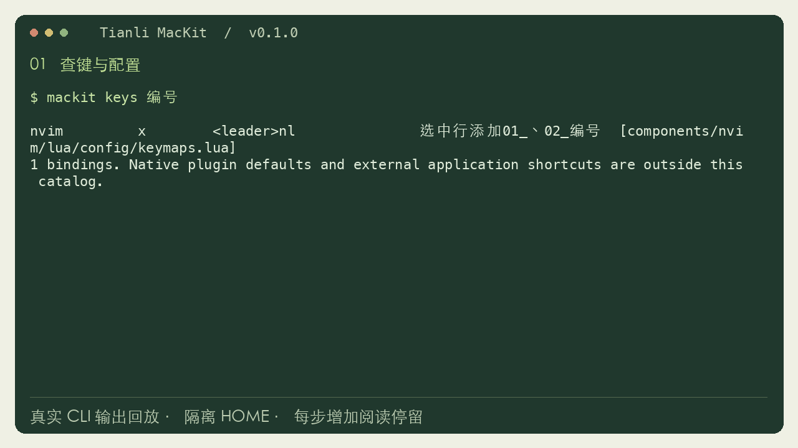

一个入口，找到配置
config nvim mackit edit nvim-keys
主配置和快捷键分别打开。行号、终端、桌面热键都有明确来源。
OPEN SOURCE / MAC CONFIGURATION KIT
忘了快捷键，找不到配置文件？
把终端、编辑器和桌面习惯，收进一套
找得到、改得明白、能恢复的配置。
v__VERSION__ · macOS · Python 3.11+ · MIT 开源

LESS HUNTING, MORE DOING
应用仍然使用自己的配置格式。MacKit 把入口、键位、个人偏好和恢复记录整理好。
config nvim mackit edit nvim-keys
主配置和快捷键分别打开。行号、终端、桌面热键都有明确来源。
mackit keys 编号 mackit keys --component zsh
搜索功能描述，同时看到按键、模式与源文件；在线手册由相同声明生成。
mackit plan
mackit apply
mackit restore已有配置先备份。每次安装有恢复记录，重复应用不会叠加改动。
SEE IT WORK
查询入口 → 安装与检查 → 恢复旧配置。以下是隔离目录中录下的真实命令与输出。
GET STARTED
先装 Python 3.11+ 与 Git。Neovim 需 0.11+；只选择你需要的组件，不必一次装齐所有 App。
git clone https://github.com/zengtianli/mackit.git ~/.local/share/mackit cd ~/.local/share/mackit
也可下载压缩包，解压后移到长期保留的目录，再在终端进入该目录。
下载 ZIP · v__VERSION__ ↓./bin/mackit deps ./install.sh
执行 deps 列出的 Homebrew 命令，或先只选已安装的应用。预览会显示目标文件与备份动作。
./install.sh --apply # 新终端中 mackit doctor
看到 issues: [] 表示安装来源与依赖检查通过。也可加 --components zsh,nvim,tmux 限定组件。
不运行自动远程脚本。需要 Homebrew 时请按 Homebrew 官网 安装。下载校验值 · 发行说明
YOUR HABITS, YOUR CHOICE
保留习惯不等于把同一套激进热键强加给所有人。默认从终端组件开始。
保留 Neovim 原生移动键与 Ctrl-W 窗口操作。桌面全局热键不默认启用，AI 插件不默认启用。
./install.sh --apply
S 保存，Q 退出，J/K 跳 15 行；右 Option → Hyper、右 Command 切应用。Hammerspoon 菜单里逐项开关。
./install.sh --apply --profile tianli已安装用户切换预设前，先按安装记录 restore。个人路径、账号和设备标识留在 ~/.config/mackit，不随开源包分发。
WHEN YOU GET STUCK
Neovim 中按 V 选中行，用 j/k 扩选，再依次按「空格 n l」，文本会变成 01_、02_。屏幕左侧的行号是另一项设置，用 mackit edit number 修改。
运行 mackit deps 查看所选组件的依赖。安装缺少的工具后再运行 doctor；如果不需要某个 App，首次安装时用 --components 限定组件。
先检查能否用 Git 访问 GitHub，再重新打开 Neovim，运行 :Lazy sync。代理返回 503 时需修复网络后重试。原生编辑不依赖 AI 账号；Copilot 只在个人预设启用，使用前需自行授权。
确认使用 tianli 预设，Hammerspoon 正在运行，并在 macOS「隐私与安全性」授予它辅助功能权限。点击菜单栏 ⌨ 检查开关。Karabiner 的系统扩展与输入监控权限按 App 自带引导完成。MacKit 不替你启动 yabai/skhd 服务。
运行 mackit restore，按最新一次安装向前恢复。用 mackit status 查看记录。如果你安装后换成了新文件，恢复命令会提示先保留新内容，避免覆盖。
doctor 检查套件内的声明范围与重复键。系统权限、插件内建默认键，以及其他 App 是否抢先拦截，需要运行时核查；它不会把“配置存在”当成“按键一定送达”。